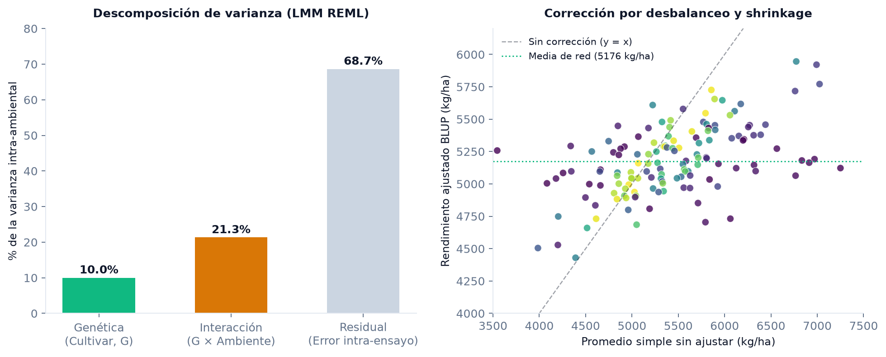
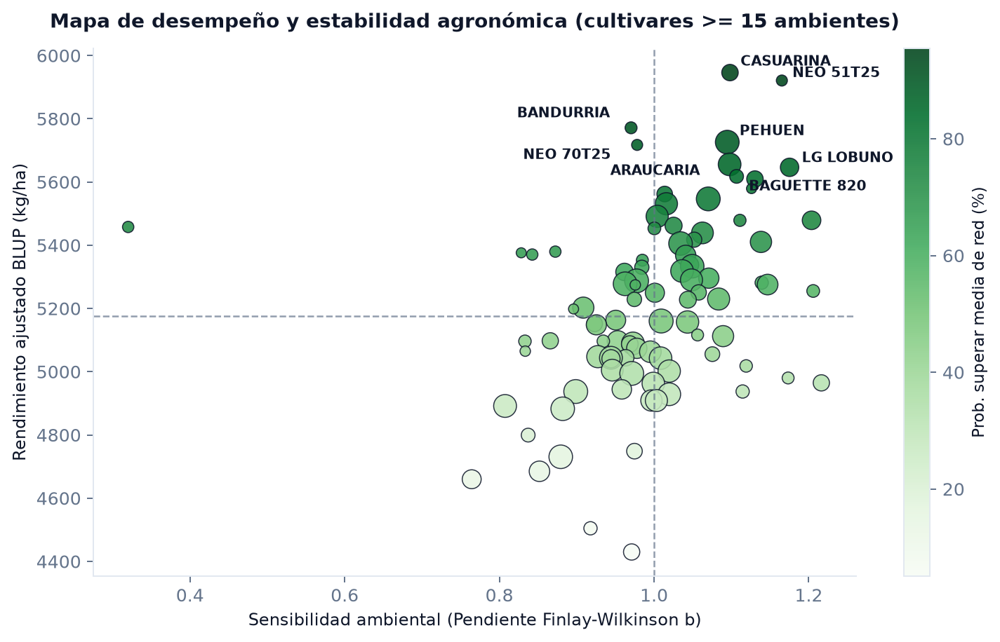

Por qué el promedio simple engaña en redes de ensayos multi-ambiente
Evaluación con Modelos Lineales Mixtos (REML / BLUP) sobre 14.978 parcelas reales de la Red de Ensayos Comparativos de Variedades de Trigo (RET-INASE, campañas 2024/25 y 2025/26).
1. El problema: redes desbalanceadas y sesgo ambiental
En redes reales de ensayos comparativos —ya sea evaluación de cultivares, bioinsumos o terápicos— no todos los tratamientos se evalúan en los mismos sitios ni en la misma cantidad de ambientes. Al consolidar las planillas oficiales de la RET-INASE para las campañas 2024/25 y 2025/26, observamos que de los materiales evaluados, más de la mitad aparece en tres o menos ambientes.
Si se ordena el desempeño mediante el promedio aritmético simple, un tratamiento evaluado únicamente en localidades de alto potencial (ej. Balcarce u Oliveros) aparece artificialmente por encima de materiales probados en 50 o más ambientes que incluyen zonas restrictivas.
2. Metodología: Modelo Lineal Mixto (REML / BLUP)
Para aislar el mérito genético real del efecto de cada campaña, localidad, época de siembra y manejo (con y sin fungicida), modelamos el rendimiento a nivel de parcela mediante un Modelo Lineal Mixto:
rindeijk = μ + Ambientej + gi + (g × Ambiente)ij + ϵijk
Sobre la red conectada (143 cultivares evaluados en al menos 5 ambientes, 14.978 parcelas, media general de red de 5.176 kg/ha), la estimación por Máxima Verosimilitud Restringida (REML) descompuso la varianza intra-ambiental en:
- Varianza Genética (σ²G): 93.161 (10,0% — desvío estándar genético de 305 kg/ha).
- Interacción Genotipo × Ambiente (σ²G×E): 198.302 (21,3% — 2,13 veces mayor que la varianza genética pura).
- Error residual intra-ensayo (σ²e): 638.425 (68,7%).

3. Validación fuera de muestra: campaña 2024/25 → 2025/26
Para medir capacidad predictiva real sin mirar el futuro, entrenamos ambos métodos únicamente con los datos de la campaña 2024/25 y evaluamos su precisión para predecir el desempeño relativo de los mismos cultivares en la campaña siguiente (2025/26):
- Promedio simple: RMSE de 928 kg/ha y correlación entre campañas de r = 0,08 (prácticamente ruido ambiental).
- Modelo Mixto (BLUP): RMSE de 292 kg/ha (69% menos error) y correlación de r = 0,40.

4. Estabilidad agronómica y probabilidad de retorno
Dado que la interacción G×E duplica a la varianza genética pura, la decisión comercial requiere combinar potencial (BLUP), sensibilidad ambiental (pendiente b de Finlay-Wilkinson) y probabilidad de superar un umbral económico en un lote nuevo.

| Cultivar | Ambientes | Media simple | BLUP ajustado | Sensibilidad (b) | Prob. > Media | Prob. > +300 kg/ha |
|---|---|---|---|---|---|---|
| CASUARINA | 40 | 6.773 kg/ha | 5.946 kg/ha | 1,10 | 95,4% | 84,9% |
| NEO 51T25 | 18 | 6.992 kg/ha | 5.921 kg/ha | 1,17 | 94,5% | 83,0% |
| BANDURRIA | 21 | 7.025 kg/ha | 5.771 kg/ha | 0,97 | 90,0% | 73,8% |
| PEHUEN | 83 | 5.857 kg/ha | 5.726 kg/ha | 1,09 | 88,9% | 71,1% |
| NEO 70T25 | 18 | 6.761 kg/ha | 5.717 kg/ha | 0,98 | 87,7% | 69,8% |
| ARAUCARIA | 76 | 5.892 kg/ha | 5.656 kg/ha | 1,10 | 85,6% | 65,5% |
| LG LOBUNO | 50 | 5.975 kg/ha | 5.646 kg/ha | 1,18 | 85,0% | 64,6% |
| BAGUETTE 820 | 28 | 6.174 kg/ha | 5.618 kg/ha | 1,11 | 83,2% | 62,1% |
| IS TERO | 40 | 5.224 kg/ha | 5.609 kg/ha | 1,13 | 82,9% | 61,5% |
| TIPA | 36 | 6.108 kg/ha | 5.562 kg/ha | 1,01 | 80,1% | 57,5% |
Lectura práctica: Materiales como IS TERO muestran un promedio simple modesto (5.224 kg/ha) por haber sido evaluados con mayor frecuencia en ambientes restrictivos, pero el ajuste por ambiente revela un potencial real de 5.609 kg/ha. En contraste, BANDURRIA y TIPA combinan alto BLUP con sensibilidad cercana a 1,0 (estabilidad consistente entre ambientes).
¿Necesitás analizar tu propia red de ensayos?
Aplicamos modelos mixtos, análisis espacial y estimación de retorno económico sobre tus ensayos a campo, redes de distribuidores o validación de productos AgTech.
Conversemos sobre tus datos